Mountain Show Recordings
*click picture of the artist to hear recordings and find associated links*
Mountain Show XXVIII on December 6th, 2015
Meaner Pencil at the peak
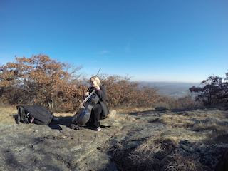
Robot Death in the forest on the way down
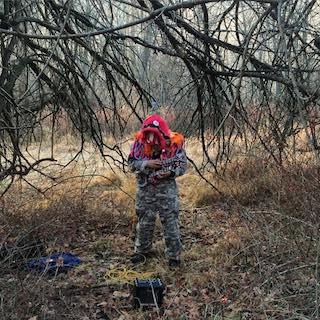
Dean Cercone by a stream
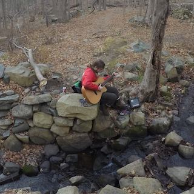
Mountain Show XXV on October 10th, 2015
Plebeian at the peak
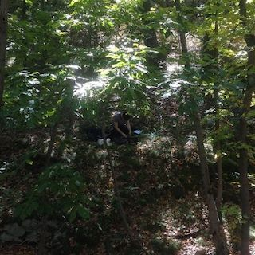
Bradley Bailey in the woods on the way down
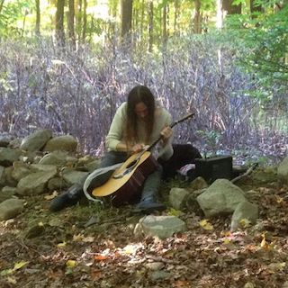
Stress into the ruins of a barn
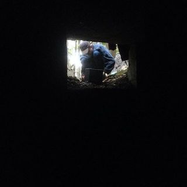
Tokay into a cistern filled with frogs
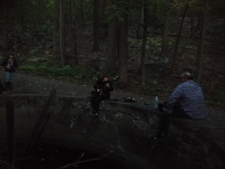
O' Great North in the ruins of a mansion in the dark
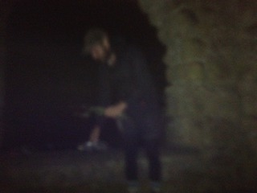
Mountain Show XXIV on September 20th, 2015
Daniel Klag at the peak
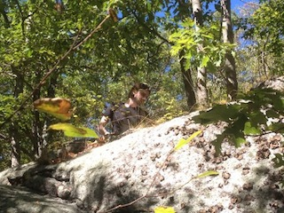
Soul Worm in the woods on the way down
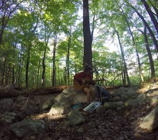
The Spookfish at the ruins of a mansion
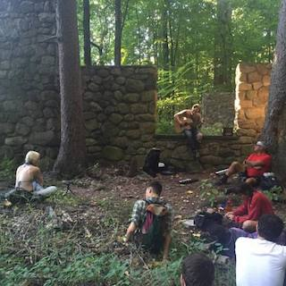
----------------------------------
all recording and mixing by Stephanie Beattie
websites:lakeswholelakes.com
calxvida.com
theseerscatalogue.net
mountain shows are put together and led by Dan Goldberg aka the spookfish
website: thespookfish.bandcamp.com
venmo: daniel-goldberg-7